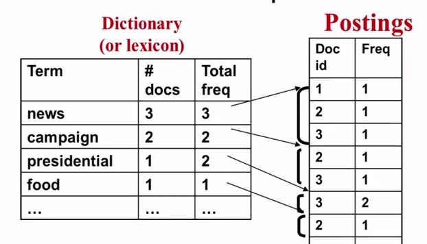
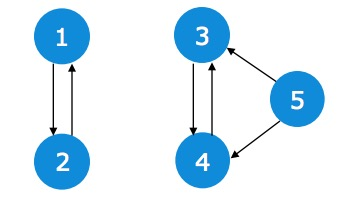

General Introduction
IR can be defined like this:
Information retrieval (IR) is finding material (usually documents) of an unstructured nature (usually text) that satisfies an information need from within large collections (usually stored on computers).
Today IR has changed from:
- researchers to public
- from material and document to unstructed data and semi-structed data
- file of IR expand to supporting users browsering, filtering, even future processing a set of document.
- small scale to large scale
In order to get access to text information, two modes:
- PULL Mode (search engine), user take initiative, need ad hoc information, including querying and browsing.
- PUSH Mode (recommendation system), system take the initiative, good understanding of user's need.
Text Retrieval
Given collection of documents, user send a query to express information need, retrieval system returns relevant documents to users. TR is in the core of IR.
Text retrieval and DB search?
- Unstructured vs structured data.
- ambiguous vs well-defined semantics for both data and query.
- Incomplete vs complete specification.
- Returns relevant documents vs matched records.
TR is an empirically defined problem, can not be mathematically prove which method is better, need evaluation.
We have n kinds of languages, this is named Vocabulary:
and m words in a query,
Documents:
Collection:
Set of Revelant Document:
Task is to compute an approximation of R(q) named R'(q). 2 Strategies:
- Document selection, a binary classifier used to decide whether the document is relevant or not relevant.
- Document ranking, use a relevance measure function to decide whether one document is most likely to be relevant to another.
For document selection:
For document ranking:
and \(\theta\) is the threshold. According to Probability Ranking Principle, the utility of a document to a user is independent to the utility of other document to the same user. At the same time, user is likely to browse result sequentially. Ranking is more preferred.
So the main challenge for designing a search engine is to design an effective ranking algorithm.
Design a Ranking Algorithm
A good ranking function should rank relevant documents on top of non-relevant ones, key problems is to measure the likelyhood that document d is relevant to query q. Achieve this gold by design a retrieval model.
- Similarity based models, for example, vector space model.
- Probabilistic models, query and documents are all random variables
- Axiomatic Model, f(q,d) must satisfy a set a constraints.
For example:
The times word1 occur in document d is named Term Frequency(TF).
The length of document d is denoted as Document Length.
The frequency of word1 occurs in collection, is named Document Frequency(DF):
State of the art ranking functions rely on
- bag of words representation
- Term Frequency and Document Frequency
- Document Length
Vector Space Model(VSM)
We represent document and query by a term vector.
- Term: basic concept, word or phrase.
- Each Term defines one dimension
- N term define an N-dimensional space
- Query vector :q=(x_1, … x_n), x_i is query term weight.
- Doc vector: d=(y_1, …, y_n), y is doc term weight.
Define relevance(q,d) = similarity(q,d) = f(q,d).
In VSM, query is denoted as:
1 means current term is present, 0 means absent. Similarly:
Using dot product to measure similarity:
But this simplest VSM is not effect for 2 reasons:
- Same words occur multiple times will not take into consideration (dot product = 0).
- Some terms are naturally more important than other terms (stop words).
Improved VSM: Term Frequency Vector:
And
still use dot product
Further Improvement of VSM: Adding Inverse Document Frequency (IDF). At this time
and
M is the total number of docs in the collection, k is the document frequency. Works very well to penalise popular terms.
Still have problems. If one term occus many times, score could be very high.
Now, the similarity function is denoted as:
If one word occur in one document for multiple times and the final score could be very large, this is not what we want. We need to some sort of penalise c(w,d) using a logarithm function. This is named TF Transformation , so far, transformation worked best is BM 25. where
If k is relatively small, the c(w,d) is likely to be approximately equals to \(x\in\{0,1\}\). In contrast, if k is very large, the similarity function approximately equals to f(q,d) denoted before (no penalise). So it is very flexible and robust to use BM 25.
Still has some problem, what if document length dosn't equal? Long doc must be more relevant than shot doc? Should penalise long documents, this is named Document Length Normalization.
- long doc is more likely to match query
- need to avoid over-penalization
Pivoted Length Normalization:
where \(b\in[0,1]\). Bu adjust b from 0 to 1, we can control the degree of normalisation.
State of the Art VSM Ranking functions:
Pivoted Length Normalization VSM:
BM 25:
Where to improve?
- stemming, stop words, latent semantic indexing, n-grams.
- language specific and domain-specific tokenisation.
- Consine distance? Eculiden distance?
To normalize lexical units, map words with similar meaning into same indexing term. To root form, named Stemming. Chinese need segmentation.
Further improvement of BM25
BM25-F, use BM25 for documents with structures. (Robertson, Stephen, Hugo Zaragoza, and Michael Taylor. "Simple BM25 extension to multiple weighted fields." Proceedings of the thirteenth ACM international conference on Information and knowledge management. ACM, 2004.).
Tokenization, word has the same meaning should be mapped into the same index term (semantically similarlly terms). Stemming, map words to it's root form.
Indexing
Indexing is to convert documents to data structure that enable fast search. Inverted index is the dominating indexing method. Using dictionary + posting list, relevant knowledge have a good introduce in
When it comes to distribution of words:
- exists stable language-independent patterns in how people use natural language.
- Stop words occurs very frequently, most words occur rarely.
- Most frequent words in one document may rare in another document.
This is described by Zipf's Law:
Data structure for inverted index
- dictionary, meed fast random access, memory hash table, b-tree, trie..
- Posting, disk, contain docID, term frequency, term position etc, compression is desirable (save space and save loading time because IO is expensive).

Deal with the problem of huge index vs limited memory. Sort-base methods:
- collect termID, docID, freq
- sort local tuples to make runs (sort by doc-id -> sort by term)
- pair-wise merge runs
- ourput inverted file
After these process, posting-lsit could be faily large and we need to compression this posting list:
- Term Frequency compression (zipf's law, small values tend to occur more frequently)
- Doc ID compression, using d-gap strategy, store difference.
Index compression, we can use several methods, including binary coding, unary coding, \(\gamma\) coding, \(\delta\) coding etc. After compression, need to un-compress.
A general overview of scoring function:
where \(f_d(d)\) and \(f_q(q)\) are adjust terms, \(g(t_i,d,q)\) compute weight of a matched term, use h(x) to aggregate all these term weights. For fast search:
- Adgust terms need to be pre-computed.
- Maintain a score aggregator h.
- For each query term t, fetch inverted list, return all documents match this query term. For each match, compute function g, give us a weight, update aggregator and incrementally compute h.
Some further improvement:
- Cache popular terms in memory.
- Parallel computing.
IR System Evaluation
WHY?
- Measure system utility.
- Compare different systems and models.
Prepare a RESUABLE(cranfield evaluation methodology) test collection consist:
- A document collection (resonable size).
- A test suite of information needs, expressible as queries.
- A set of relevance judgments, standardly a binary assessment of eitherrelevant or nonrelevant for each query-document pair.
- Measures to quantify how well system matches ideal ranked list.
Respect to user information need, test document collection is given a binary classification as either relevant or non-relevant. 50 information needs has usually been found to be a sufficientminimum, then average performance.
The information need to be overt. Many systems can do parameter turnning for better performance, it is not a good idea as may lead to over-confident result. Better way is to define a independent test document collection. There exists some Standard Test Collections such as TREC, GOV2..
In summary, need queries q1, q2 … qn, document collection d1, d2 … dm, and relevance judgement.
Evaluation of Unranked retrieval sets
Most frequent metrics, precision and recall.
Denote with tp, fp, fn, tn:
It is important to use both metrics together. For different use, there may be a tradeoff between 2 scores.
A single measure that trades off precision versus recall is the F measure, which is the weighted harmonic mean of precision and recall:
The default balanced F measure equallyweights precision and recall, which means making α = 1/2 or β = 1. Here:
Values of β < 1emphasize precision, while values of β > 1 emphasize recall. For example, avalue of β = 3 or β = 5 might be used if recall is to be emphasized. Recall,precision, and the F measure are inherently measures between 0 and 1, butthey are also very commonly written as percentages, on a scale between 0and 100.
For ranked retrieval result, we need some different metrics. In a ranked retrieval context,appropriate sets of retrieved documents are naturally given by the top k retrieveddocuments P@K. For each such set, precision and recall values can be plotted to give a precision-recall curve.
Precision-recall curves have a distinctive saw-tooth shape: if the (k + 1) document retrieved is nonrelevant then recall is the same as for the top k documents, but precision has dropped. If it is relevant, then both precision and recall increase, and the curve jags up and to the right.
The standard way to do this is with an interpolated precision: 11-point interpolated average precision. For each information need, the interpolated precision is measuredat the 11 recall levels of 0.0, 0.1, 0.2, . . . , 1.0. For each recall level, wethen calculate the arithmetic mean of the interpolated precision at that recalllevel for each information need in the test collection. A composite precisionrecallcurve showing 11 points can then be graphed.
MAP, mean average precision, arithmetic mean of average precision over a set of queries. gMAP, geometric mean of average precision over a set of quries.
When there's only one relevant document in collection (known item search, for example, search github home page). Use reciprocal rank = 1/r, where r is the position of the single relevant document. Multiple queries can try mean reciprocal rank.
NDCG, normalizer discount of accumulative gain. First, get gain value for n documents, and cumulative gain
| doc | gain | cumulative gain | Discounted CG |
|---|---|---|---|
| doc1 | 3 | 3 | 3 |
| doc2 | 2 | 3+2 | 3 + 2/log2 |
| doc3 | 5 | 3+2+5 | 3 + 2/log2 + 5/log(3) |
| doc4 | 2 | 3+2+5+2 | 3 + 2/log2 + 5/log(3) + 2/log(4) |
Normalize DCG with IDEAL DCG use
we are able to map DCG into range [0,1]. And NDCG@K is also applicable.
Use statistical significance testing to know the variation of score (Wilcoxon test).
Use polling methods to get top-k documents, combine all top-K sets into a doc pool.
Probabilistic Model
Assume query and document are observed from random variables. Compute the relevance judgement by:
Here, under the condition of doc d and query q, assume they are relevant. If user want to trieval document d, what's the probability of user enter query q?
The left term won't work because we can not predict user query and we do not have unseen documents. How? Approximate it use query likelyhood retrieval model. Which document is the most likely relevant document according to user query?
Query Likelihood:
Use language model to model user query text. Statisticsl language model is a probability distribution over word sequence. Unigram Model is the simplest model, treat text independently:
and:
Based on different topic, we need different term distribution (Background LM, Collection LM (e.g. Document Related to CS), Document LM(e.g. An IR paper)). We assume query is geenrated by sampling words from documents. Assume each query word is generated independently:
But if query has term3, term3 not appear in doc, the final score = 0. We change assumption, allow user query not in document. Instead using term frequency, use language model.
In general, use log-likelihood:
Here, w in V denotes for document has the term w. c(w,q) denotes for count of user query words and \(logp(w|d)\) denotes for the language model. The language model is what we need to estimate.
Use smoothing method. Let the probability of an unseen word be proportional to its probability given by a reference LM.
If w is seen in d
otherwise:
Here, we use whole collection C as a reference language model.
This can be rewrite as:
The final term has gives no impact on final ranking result, then we have:
Use linear interpolation smoothing (Jelinek-Mercer). Smooth \(P_{seen}(w|d)\):
where \(\lambda\) is the smoothing parameter, \(\lambda \in [0,1]\).
Plug into ranking function:
Another smoothing named Dirichlet Prior Smoothing (bayesian).
where \(\mu\) is the smoothing parameter, \(\mu \in [0, + \infty]\). Plug into Dirichlet Prior Ranking function:
where n is the length of query.
FeedBack
For VSM, geometrically, we want to move the user query towards to rerevant documents instead of non-relevant documents. Use Rocchio Feedback, where:
Here, when user search use query q_origin, the system automatically change the query to q_feedback. The second terms control the closeness of relevent terms, the third term control the distance to non-relevant documents. Alpha control the original term, beta control positive documents, gamma control negative documents.
In practice, negative samples are not important, need to avoid overfitting (to ensure origin query contribute the most).
Web Search
Challenges:
- Scalability, size of web, serve user query efficiently. Use parallel indexing and searching.
- Inforamtion quality and spam, use spam detection.
- Dynamics of web, new pages appears constantly. Link analysis.
Component 1 Crawler. Some strategies:
- Breadth-first.
- Parallel.
- Polite.
- Incremental crawling (resource optimisation).
- Track.
- Discover new pages.
Link Analysis: PageRank and HITS are two kinds of most widely used retrieval model based on importance instead of relevance judgement.
Different information needs, additional information and information quality varies made it not sufficient of traditional search model.
- Exploting links to improve scoring
- Exploting clickthrough for implicit feed back
- rely on machine learning to combine different features.
According to links (inter/outer), can be divede to Authority page and Hub page. Example PageRank:
Basicaly, in-link counts is most important. Build a transition matrix indicates the probability of a random user click a specific page.
PageRank,the probability of random surfer visting a webpage converge to a fixed, steady-state quantity.

Example Transform Matrix:
And:
where S \(\in R^{n*n}, S_{i,j}=1/n\), m \(\in\) [0,1). And pagerank score equals:
Until converge. The problem of Dangling Nodes, a node without outgoing links (img, music, pdf, protected pages….account for over 50%).
Learning 2 Rank
Given a query-doc, define various kinds of features X(Q, D). For example, BM25, probability models, PageRank for document D. Use some training data to train a model. Detailed information in blog learning to rank.